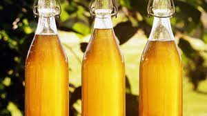

Mead

Description
This is The Odin Project. So how can you make a recipe book without Odin's signature beverage?
That's right we are making MEAD!!! A delicious ambrosia straight from Valhalla's hall's. A
drink so pure and appetizing you'll never be able to enjoy anything else ever again.
A note before we begin. This recipe given yields 1 gallon of mead. It scales perfectly
depending on how much you want to brew.
Another note. This recipe assumes you are at least familiar with the brewing process of Alcohol
and have the tools needed to do so.
- 3 LBS of Pure Honey with Honey Comb
- 2 Large Oranges
- 1/8 Cup Raisins
- 1/4 Tablespoon Yeast
- 1 Gallon Distilled Water
- Optional ingredients Follow
- 1 1/2 Cup Mixed Berries
- 1 Table Spoon Brown Sugar
- Bring a pot of water to just below a boil. Place containers with honey in them in pot
once water gets warm to the touch. Do not allow water to boil. Try to keep it just below
that temperature.
- While honey is warming, pour 1 gallon of water into distilling bucket. Add in Oranges,sliced
into fourths, raisins, and optional ingredients. If adding berries mash them before adding.
- Mix the contents of the bucket thoroughly with a large wooden spoon. Alternatively put lid
on the bucket and shake.
- Once honey is warmed up and easily movable begin pouring into distilling bucket. Add 1 pound at
a time mixing while pouring. Once all honey has been added stir for 1 to 2 minutes or put lid on
bucket and give a good shake.
- Check temperature of the contents of the bucket. Wait for them to fall below 95 degrees farenheit
stirring occasionally. Keep bucket lid on bucket during this time to preven contamination.
- Once mixture is below 95 degrees add(pitch) in yeast. Mix vigorously and quickly. After stirring
with the spoon add the lid and start shaking. You want to make sure that yeast is good and mixed in.
- Attach your airlock and wait 28 days. Checking every few days for anything that shouldn't be there